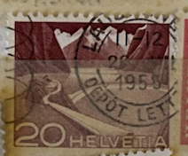
| SOURCE | TITLE| IMAGE MATCH | click to source page |
| eBay | 1949 Swiss Postage Stamp Mountain Railway At Rocher de Naye 10 Centime Canceled | eBay | 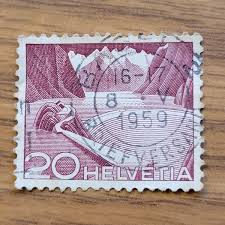 |
| eBay | 1949 Swiss Postage Stamp Grimsel Reservoir 20 Centime Canceled | eBay | 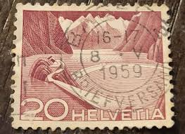 |
| eBay UK | SWITZERLAND 1949 20 Ct Scott 332 // SG 514a Gimsel Reservoir Type II | eBay UK | 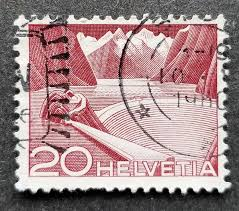 |
| Stamp Collecting Blog | Technik und Landschaft” Series | 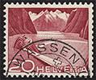 |
| HipStamp | International Refugee Organization, Geneva 6O1 (U) | Europe - Switzerland, Stamp / HipStamp | 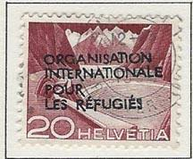 |
| HipStamp | Switzerland #332 Grimsel Reservoir; Used | Europe - Switzerland, General Issue Stamp / HipStamp | 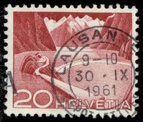 |
| Alamy | Vintage switzerland stamp retro hi-res stock photography and images - Alamy | 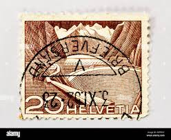 |
| Alamy | Switzerland stamp hi-res stock photography and images - Alamy | 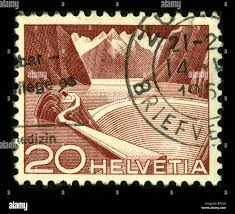 |
| eBay UK | Cats Used Swiss Stamps for sale | eBay UK | 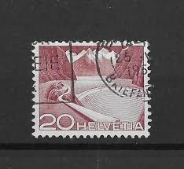 |
| eBay | Switzerland Helvetia 20 Postage Stamp Brown TKS279* | eBay | 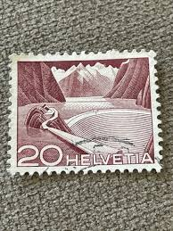 |
| Mercari | 1940 New Zealand (No.279) Never Hinged | Mercari | 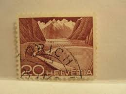 |
| 123RF | SWITZERLAND - CIRCA 1934: Stamp Printed By Switzerland, Shows St. Gotthard Railroad, Circa 1934 Stock Photo, Picture and Royalty Free Image. Image 17838239. | 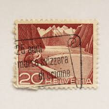 |
| allnumis.com | Stamps Catalog - List of stamps for Misc, Switzerland - page 2 | 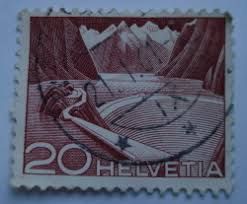 |
| PicClick | SWITZERLAND HELVETIA 20 Postage Stamp Red $2.09 - PicClick | 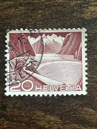 |
| Alamy | Landscapes and technics series hi-res stock photography and images - Alamy | 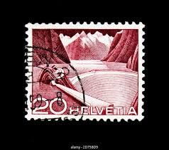 |
| postbeeld.com | Stamp 1949, Switzerland 20c, Brown, Type I, (3 lines above rock) 1v, 1949 - Collecting Stamps - PostBeeld - Online Stamp Shop - Collecting | 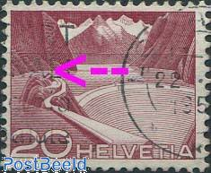 |
| Invest In Different Countries Postage Stamps | 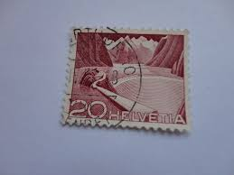 | |
| HipStamp | Switzerland #332c Used Single | Europe - Switzerland, Stamp / HipStamp | 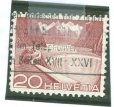 |
| Alamy | Grimsel reservoir type ii hi-res stock photography and images - Alamy | 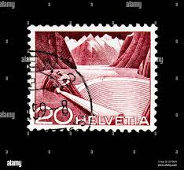 |
| Todocolección | suiza 1967 -yvert 795/798 º usado - Buy Antique stamps of Switzerland on todocoleccion | 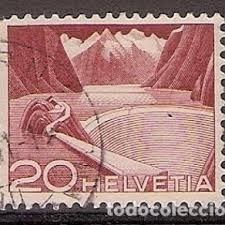 |
| myloview.com | Old postage stamp from switzerland on white background. posters for the wall • posters Helvetian, philately, philatelic | myloview.com | 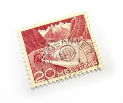 |
| netrevenda.com.br | Switzerland 1894 (Complete.Issue.) Unmounted Mint/Never | 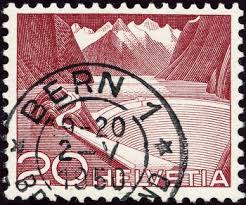 |
| Cherrystone Auctions | U.S. & Worldwide Stamps & Postal History - January 11-12, 2006 - SWITZERLAND | 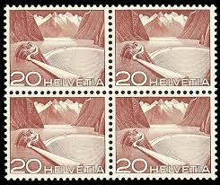 |
| Alamy | Postage stamps of the Helvetia. Stamp printed in the Helvetia. Stamp printed by Helvetia Stock Photo - Alamy | 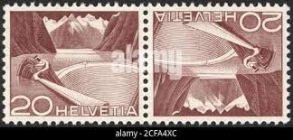 |
| eBay | Switzerland - 1949 Engineering | eBay | 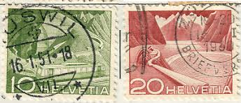 |
| Wieland Briefmarken | Wieland Stamps > Switzerland > Postage stamps 1946 - 1960 | 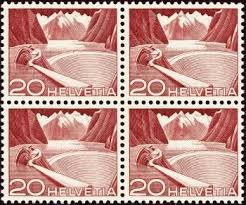 |
| www.restauranteovasko.com | HIGH VALUE! Helvetia, 20 (3278-T) | Europe - Switzerland | 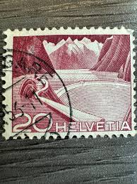 |
| What is the cancellation city in Switzerland? | 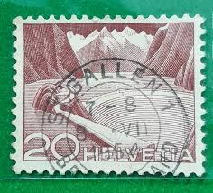 | |
| Stamp Community Forum | Switzerland 1949 Grimsel Reservoir Type I And II Identify - Stamp Community Forum | 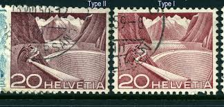 |
| Alamy | Postage stamp set hi-res stock photography and images - Page 32 - Alamy | 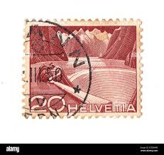 |
| Shutterstock | 68+ Thousand Helvetia Old From Postage Stamp Royalty-Free Images, Stock Photos & Pictures | Shutterstock | 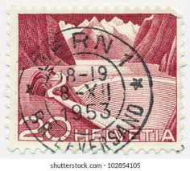 |
| This stamp was one of the topics at the Show & Tell & Ask segment. I like this too! and I really wonder if I would ever encounter that elusive type, perhaps | 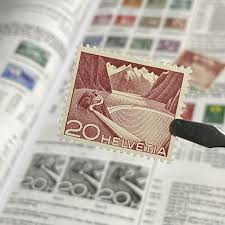 | |
| Scott Starling Stamps | SWITZERLAND - 1949 20c carmine-brown Grimsel Stausee, type I, used – Michel # 533I | 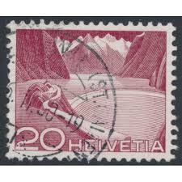 |
| eBay | Switzerland SC 332a MNH (7fff) | eBay | 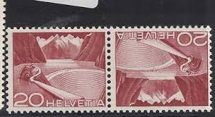 |
| eBay | Switzerland Airplane Front View Air Post classic stamp 1932 #C17 | eBay | 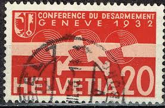 |
| HipStamp | Swiss Helvetia 20 Technology and Landscape Stamp 1949 | Europe - Switzerland, Stamp / HipStamp | 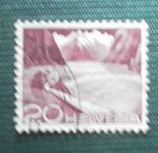 |
| eBay | SCHWEIZ 1949 533I URTYPE + 533 gestempelt verzähnt aus ROLLEN VARIANTEN (M0484 | eBay | 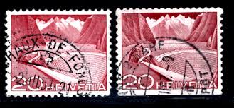 |
| eBay | Mint No Gum/MNG Postage Swiss Stamps for sale | eBay | 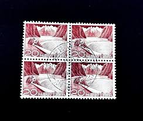 |
| Dreamstime.com | 155 Boats Stamp Stock Photos - Free & Royalty-Free Stock Photos from Dreamstime | 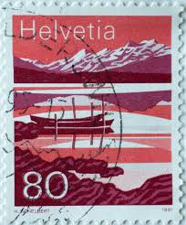 |
| eBay | Vintage Helvetia Stamps-Set of 11 | eBay | 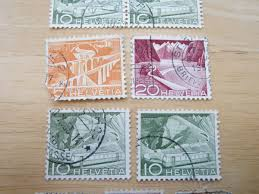 |
| iStock | Vintage Stamp Stock Photo - Download Image Now - Switzerland, Postage Stamp, 20th Century Style - iStock | 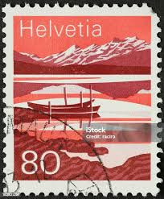 |
| eBay | SUISSE 1962, timbre 691, TRAIN, GARE JUNGFRAUJOCH, oblitéré, used | eBay | 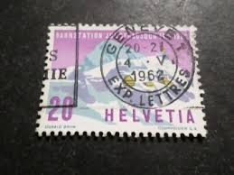 |
| eBay | SWITZERLAND 1971 SC#533-534 MINT NH COMPLETE SET BLOCKS OF 4 - CV $7.00 | eBay | 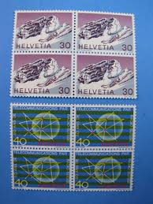 |
| Alamy | Green postage stamps hi-res stock photography and images - Page 9 - Alamy | 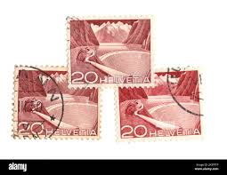 |
| eBay | Switzerland Scott # 322-24 VF Used 1949 75th Anniversary of UPU | eBay | 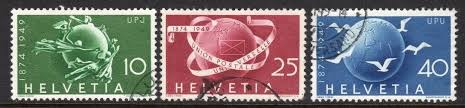 |
| eBay | Switzerland SC #O41 Used 1950 | eBay | 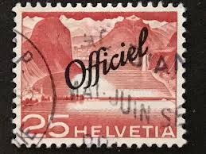 |
| Etsy | Vintage Switzerland Helvetia Stamp Collection - Etsy | 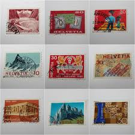 |
| lastdodo.com | Courvoisier (1880-2001) Stamp catalogue - LastDodo | 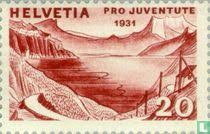 |
| eBay UK | Switzerland 1949 20c RESERVOIR, GRIMSEL VFU SC 332 | eBay UK | 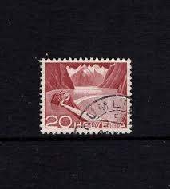 |
| eBay | Switzerland, Postage Stamp, #904-909 Used, 1991 (AC) | eBay | |
| Alamy | Switzerland stamp hi-res stock photography and images - Alamy | |
| eBay | 1934, Schweiz, Bl. 1 ZD, ** - 1733339 | eBay | |
| Amazon.com | Amazon.com: Switzerland 858-861 (Complete.Issue) unmounted Mint/Never hinged ** MNH 1967 Years Events (Stamps for Collectors) : Toys & Games | |
| eBay | FDC Schweiz - Briefmarken Premier Tag 19.2.1985 | eBay | |
| eBay | 20 Used Switzerland Postage Stamps from 1908 to 1963 | eBay | |
| eBay | SWITZERLAND:1949 SC#329-30,332 Used T | eBay | |
| eBay | Switzerland 1949 35c ALPINE POSTAL ROAD VFU SC 335 | eBay | |
| eBay | Schweiz MiNr. 858-861 gestempelt (AD 620) | eBay | |
| Jace Stamps | Switzerland Scott 229b Used - C$0.19 : Jace Stamps, Quality Stamps since 1997 | |
| eBay | SWITZERLAND 1949 Mi 533 Stamp Ty.I | eBay |